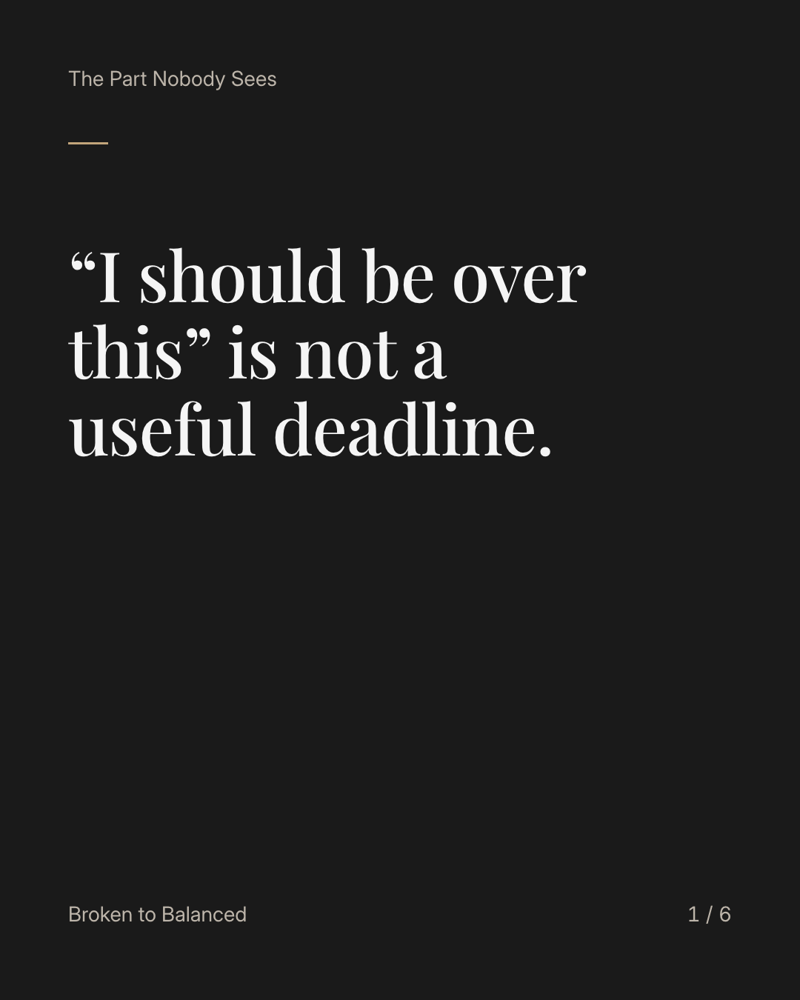
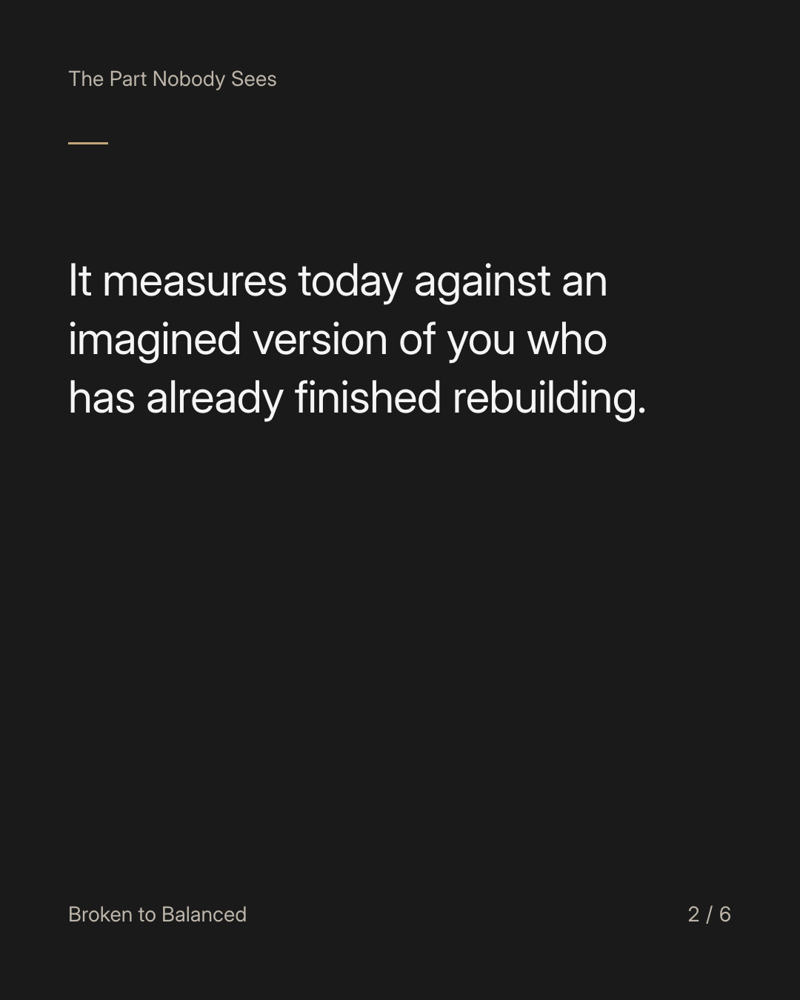
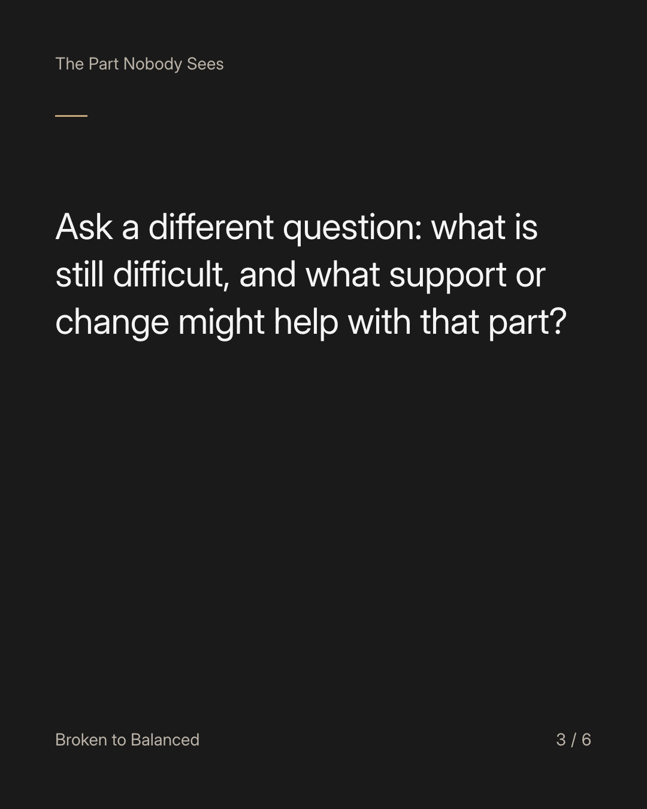
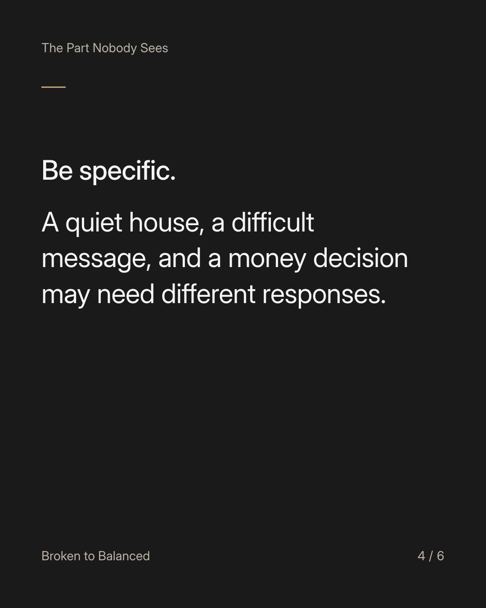
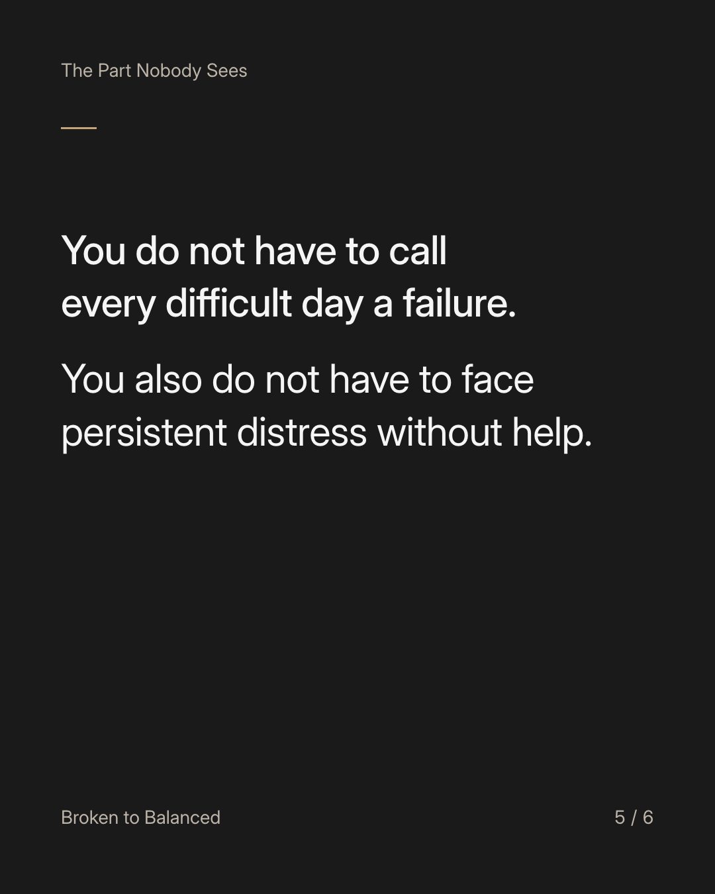
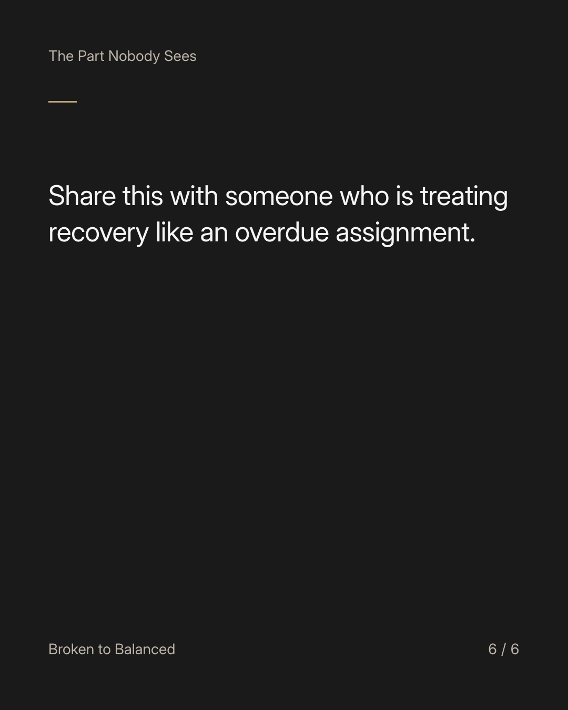

Exact text and accessibility text
“I should be over this” is not a useful deadline.
Slide 1 of 6. “I should be over this” is not a useful deadline.


Exact text and accessibility text
It measures today against an imagined version of you who has already finished rebuilding.
Slide 2 of 6. It measures today against an imagined version of you who has already finished rebuilding.


Exact text and accessibility text
Ask a different question: what is still difficult, and what support or change might help with that part?
Slide 3 of 6. Ask a different question: what is still difficult, and what support or change might help with that part?


Exact text and accessibility text
Be specific. A quiet house, a difficult message, and a money decision may need different responses.
Slide 4 of 6. Be specific. A quiet house, a difficult message, and a money decision may need different responses.


Exact text and accessibility text
You do not have to call every difficult day a failure. You also do not have to face persistent distress without help.
Slide 5 of 6. You do not have to call every difficult day a failure. You also do not have to face persistent distress without help.


Exact text and accessibility text
Share this with someone who is treating recovery like an overdue assignment.
Slide 6 of 6. Share this with someone who is treating recovery like an overdue assignment.
Exact caption
Plain-text fallback: select and copy the caption.